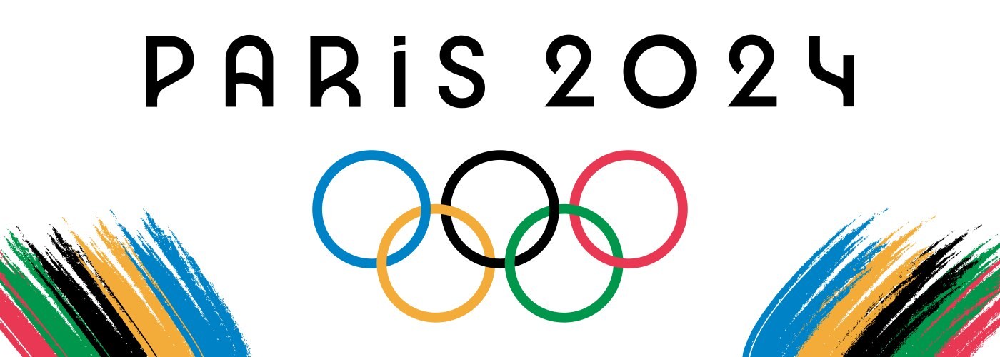
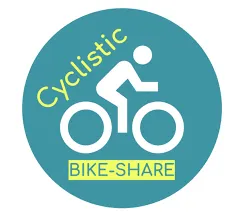

Built a pipeline that extracts data from an API, loads it into a cloud data warehouse, transforms it into analytics-ready tables, validates the output, and orchestrates the full process.

A Financial Technology company seeks to extract meaningful insights from data in order to inform their Operations and Finance Teams using SQL.

Used Excel to analye a dataset of bike buyers to identify key factors influencing purchase decisions.

Used Excel to analye a dataset of bike buyers to identify key factors influencing purchase decisions.

Insights into Twitter's sentiment of the 2024 Olympic Games.

Used SQL to extract insights to inform and improve a Hotel Group’s operations.

Check out how we used data-driven decision making to help a Cyclistic Bike-Share grow ther suscriber base.